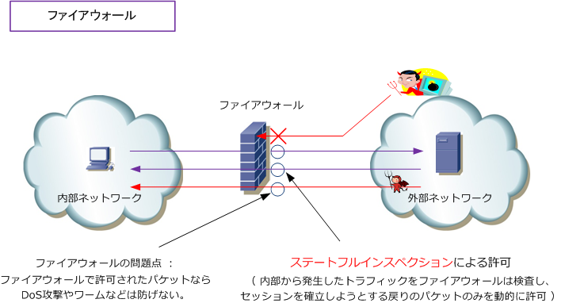
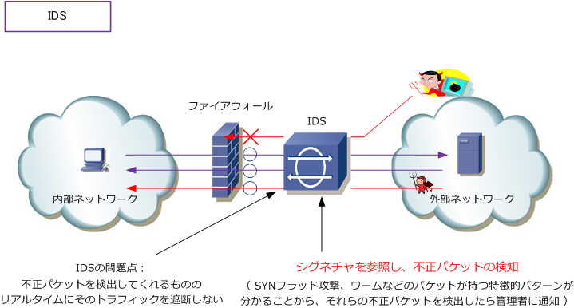
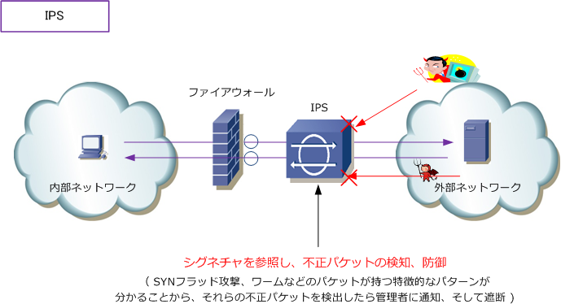
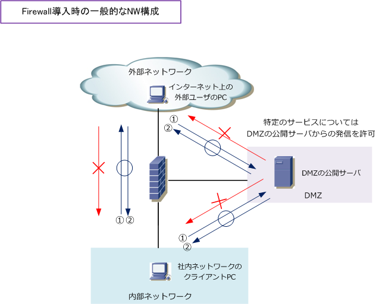

Firewall / IDS / IPS
ネットワークセキュリティ - ファイアウォール
ファイアウォールはインターネットなどの外部ネットワークから、社内ネットワークなどの内部ネットワーク への不正なアクセスを防止するシステムです。ルータなどの機器にファイアウォールの機能を持たせる構成や、 ファイアウォール専用のハードウェアとしての構成があります。ファイアウォールの基本実装として外部から 発生するトラフィックは拒否し、内部から外部へ発生したトラフィックの戻りのトラフィックは許可させます。 これは、ファイアウォールのステートフルインスペクションと呼ばれる機能を利用することで実現しています。

ファイアウォールで通信許可された設定がない限りは「 外部ネットワークからパケットが着信できない 」 これらなら完璧だと思われるかもしれませんが、ファイアウォールではパケットが悪意あるトラフィックか どうかは確認できないので、DoS攻撃やワームなどのトラフィックを効果的に防ぐことはできないことから 例えば、不正なCGIのGET要求などは見破れません。そのためにIDSまたはIPS導入の必要性が出てきます。
ネットワークセキュリティ - IDS
アノマリ検知（異常検知）は、通常時の通信量や振る舞いを基準にして、そこから外れた通信を検出する方式です。既知の攻撃パターンと照合するシグネチャ検知と区別します。基準の設定によっては正常な通信も異常と判定されます。
プロミスキャスモードは、ネットワークインターフェースが自分宛て以外の受信フレームも上位へ渡す動作です。監視用のIDSで使うことがあります。ただし、スイッチ上の他ポートの通信まで自動的に見えるわけではなく、監視にはミラーポートなどで対象トラフィックを届ける必要があります。
IDS（Intrusion Detection System）は侵入検知システムです。IDSは、その名のとおり不正アクセスなどの 悪意あるトラフィックを検出して通知します。例えば、Firewall前に置かれたIDSは、ネットワーク上を流れる トラフィックを監視していて、不正アクセスと思われるパケットを検知すると、システム管理者に通知します。 不正アクセスのパケットなのかの判断は「シグネチャ」と呼ばれる攻撃パターンのデータベースを使用します。 この侵入検知の通知を受けて、管理者は例えばファイアウォールのフィルタリングを強化して攻撃に備えます。

このようにファイアウォールとIDSの組み合わせによりセキュリティ強度が高まります。が、IDSはあくまで 検知するシステムなので、ネットワーク管理者がその検知した内容に基づいてセキュリティ制御をしない限り 攻撃を防止することはできませんしリアルタイムに攻撃を阻止することができません。そこでIPSの登場です。
ネットワークセキュリティ - IPS
IPS（Intrusion Prevention System）は侵入防止システムです。IPSは、その名の通り不正アクセスなどの 悪意あるトラフィックを検出して通知するだけでなく、シグネチャを参照し不正アクセスに該当するパケット を破棄したりセッションを切断して即座に防御します。IPSは、まさにセキュリティ実装の要の位置づけです。
侵入を検知したらリアルタイムに防御するIPSは「ワームやDoSなどのパケットが持つ特徴」をとらえた瞬間、 その直後に自動的に防衛を開始することから、IDSのような手間のかかる管理者メンテナンスは発生しません。

ネットワークセキュリティ - ファイアウォール導入時のネットワーク構成
企業ネットワークにファイアウォールを導入する場合は、ネットワークを最低でも3つに分離するのが一般的。 内部ネットワーク、外部ネットワーク、DMZの3つ。DMZ（ DeMilitarized Zone ）は非武装地帯という意味。
| 3 種類のネットワーク | 意味 |
|---|---|
| 内部ネットワーク | 企業の社内ネットワークなどの内部のネットワーク。Trustネットワークともいわれる。 |
| 外部ネットワーク | インターネットなどの外部のネットワーク。Untrustネットワークともいわれる。 |
| DMZ | 内部、外部ネットワークの両方から隔離されたネットワーク。外部ネットワークのユーザに 公開するサーバを導入するネットワーク。公開サーバを、DMZに配置しておくことによって、 サーバを不正に乗っ取られた場合でも、内部ネットワークへの不正アクセスを防止できる。 |

内部ネットワーク、外部ネットワーク、DMZ上で発生するトラフィックは一般的に以下の流れとなります。
| トラフィックの流れ | 説明 |
|---|---|
| 内部から外部へ発生するトラフィック | 設計ポリシーに従ったトラフィックのみ許可 |
| 外部から内部へ発生するトラフィック | 内部から発生した戻りのトラフィックのみ許可 |
| 内部からDMZへ発生するトラフィック | 公開サーバへアクセスするための必要最低限のトラフィックを許可 |
| DMZから内部へ発生するトラフィック | 内部から発生した戻りのトラフィックのみ許可 |
| 外部からDMZへ発生するトラフィック | 公開サーバへアクセスするための必要最低限のトラフィックを許可 |
| DMZから外部へ発生するトラフィック | 外部から発生した戻りのトラフィックのみ許可 |
自社の商品やサービスなどをインターネット上で 販売しているWebサーバのあるECサイトなどでは 社内ネットワークとは完全に切り離して、つまり インターネット接続回線も切り離してデータセンタ などで独立してNWを構成するケースが多いです。
ECサイトのようなネットワークでは単にFirewallや IPSなどを導入するだけでなく回線トラフィックを 負荷分散させる機器を導入することも多いです。
このようなネットワーク構成ではDMZという概念は はなく内部と外部という構成で考え、セキュリティ 同様に、負荷分散装置の設計が重要になってきます。